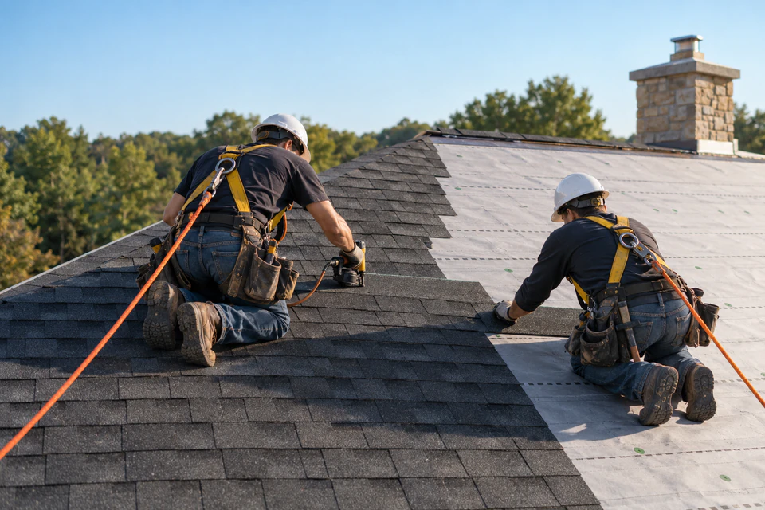
{{services3}}
{{services4}}
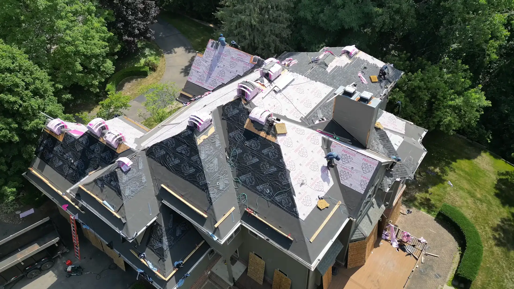
{{heroBadge}}
{{hero1}}
Free, no obligation. We’ll reply within {{reply}}.
{{hero2}}
{{hero3}}
{{hero4}}
{{hero5}}
{{about1}}
{{aboutP1}}
{{aboutP2}}
{{about2}}
{{about3}}
{{services1}}
{{services2}}

{{services4}}
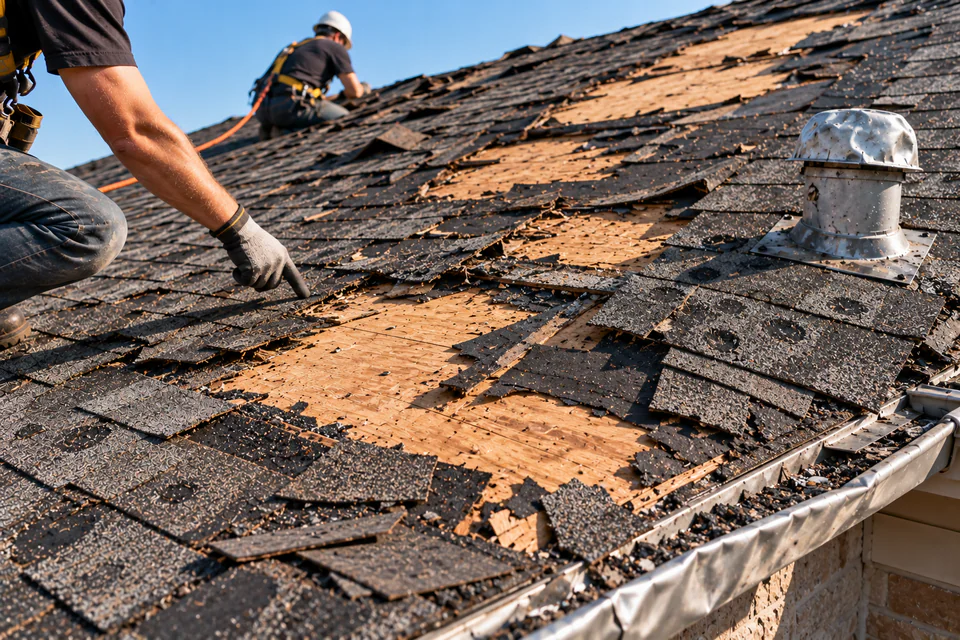
{{services6}}
{{services8}}
{{services10}}
{{services11}}
Get a Free Inspection{{services12}}
{{how2}}
{{how4}}
{{how6}}
{{how7}}
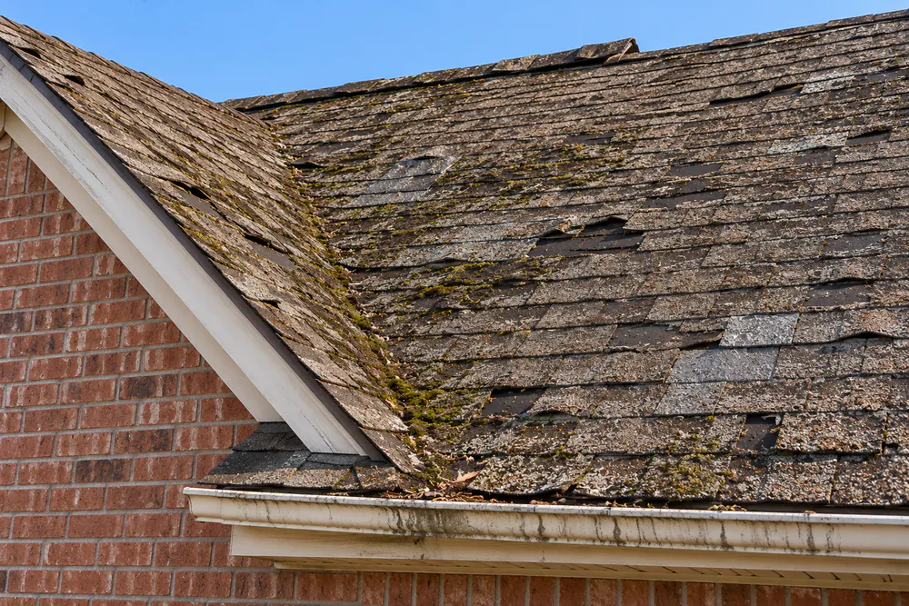
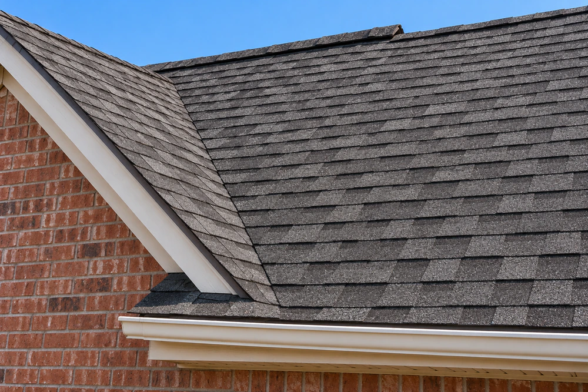
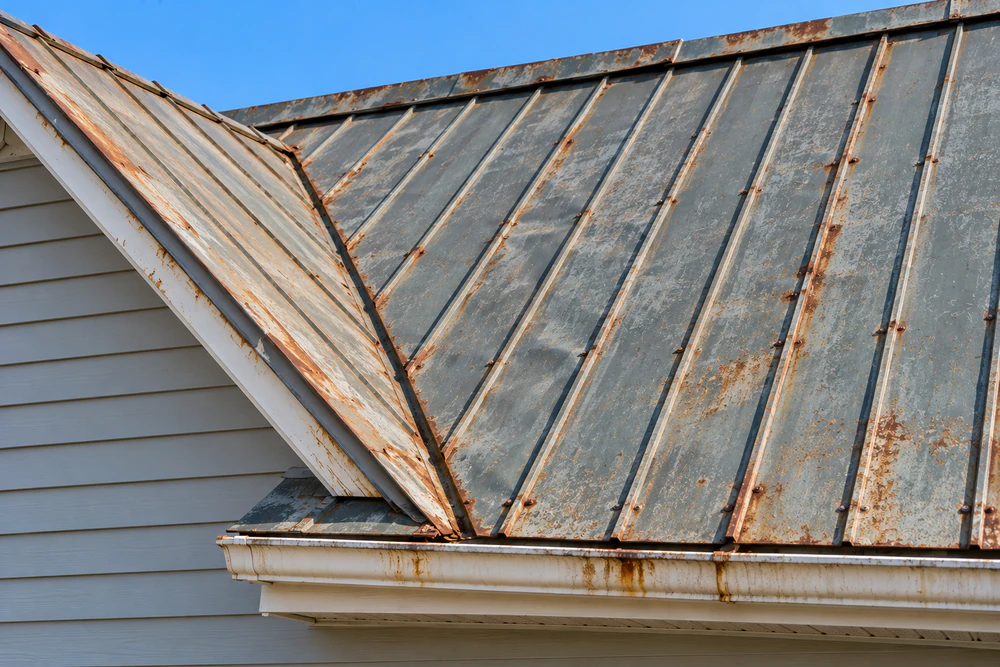
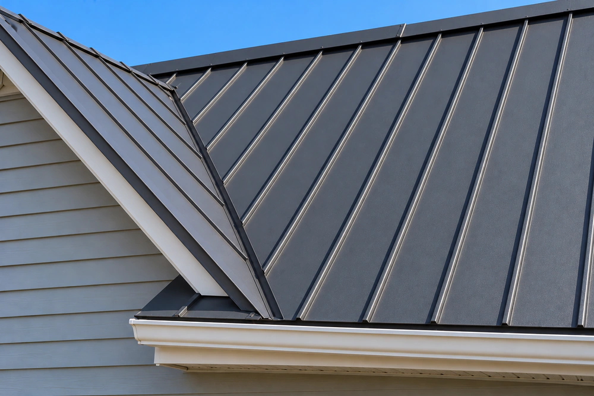
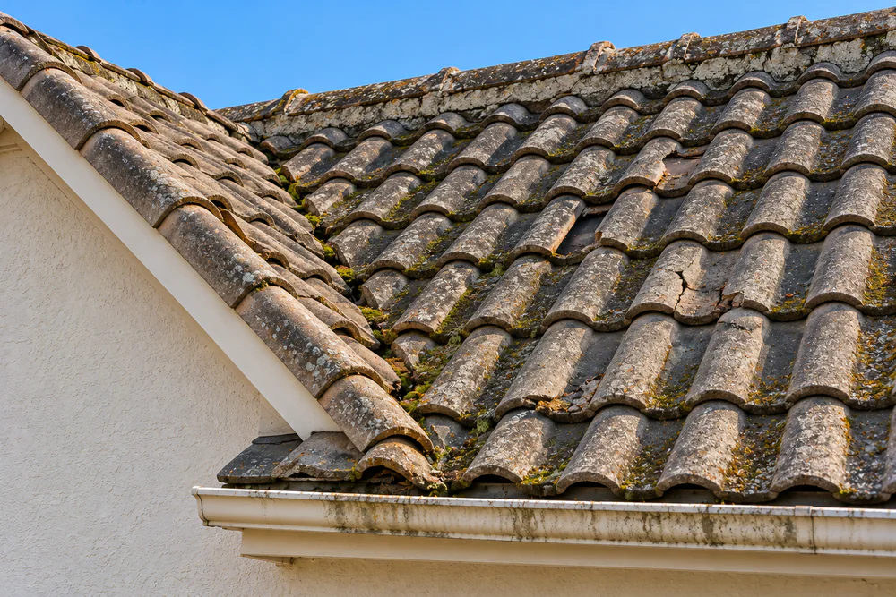
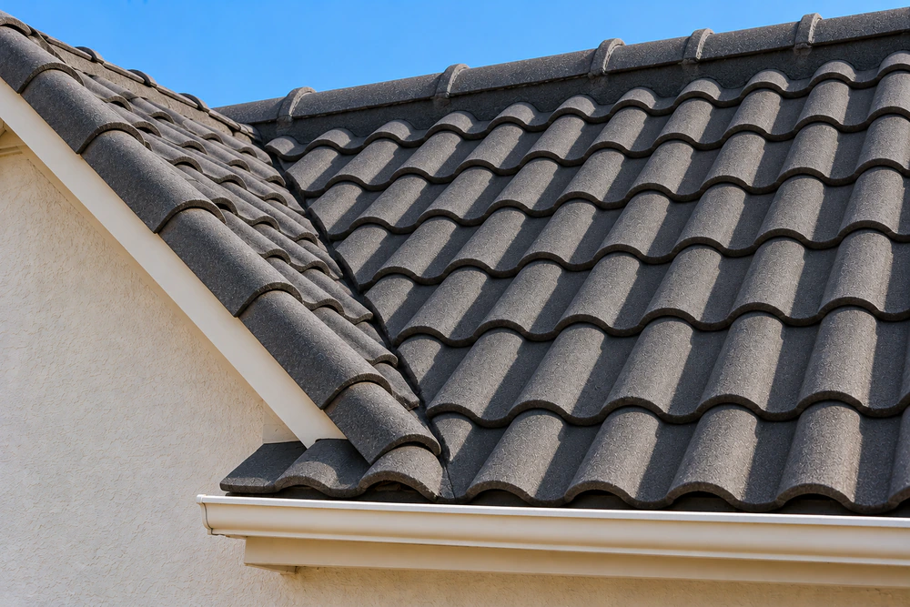
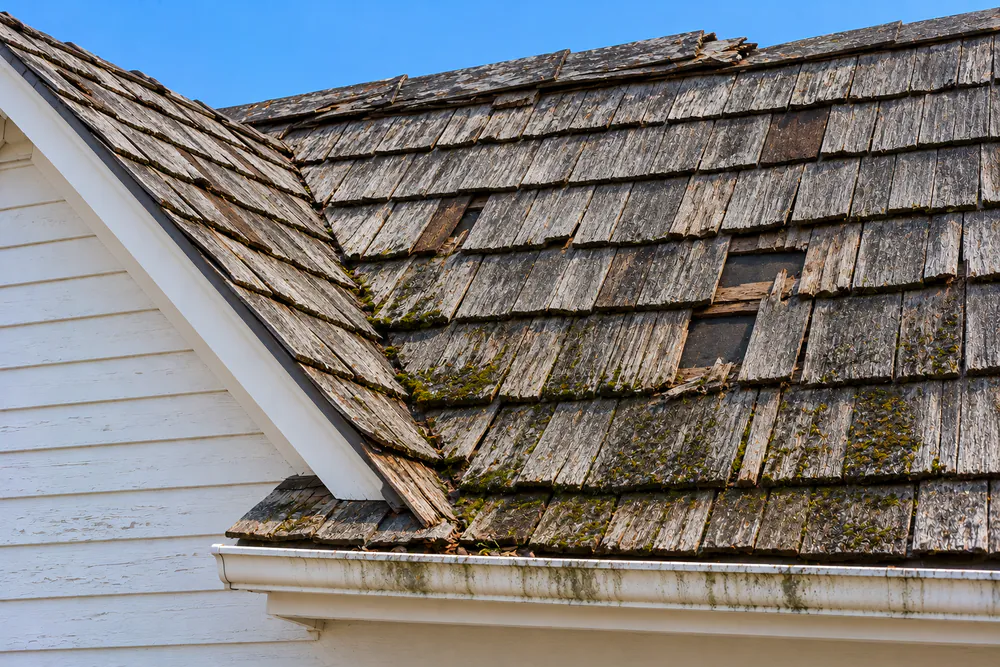
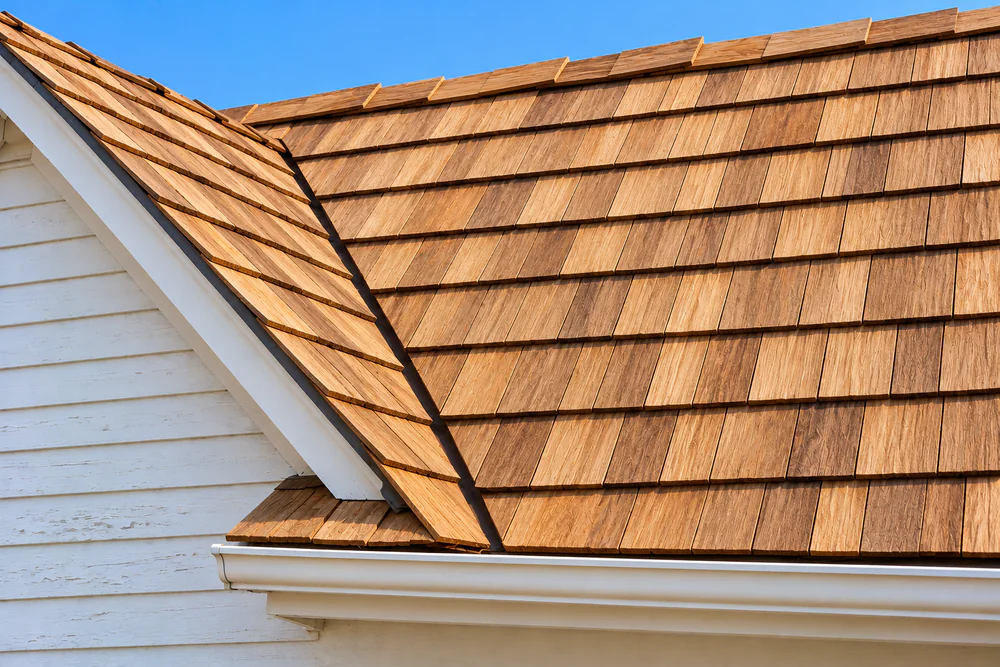
{{projects5}}
{{projects6}}
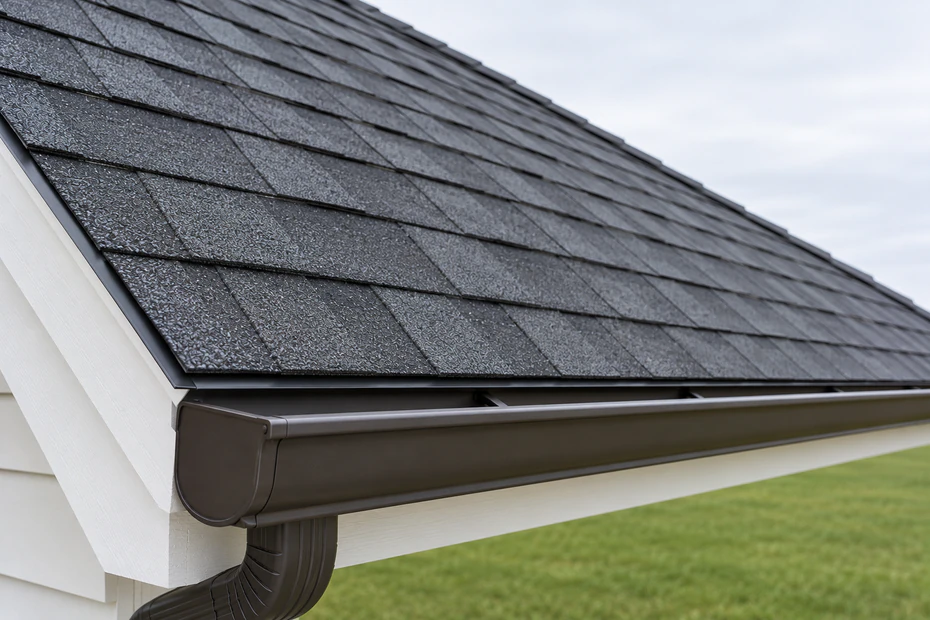
★★★★★
They showed me photos of the decking before covering it. I’ve never had a contractor do that.
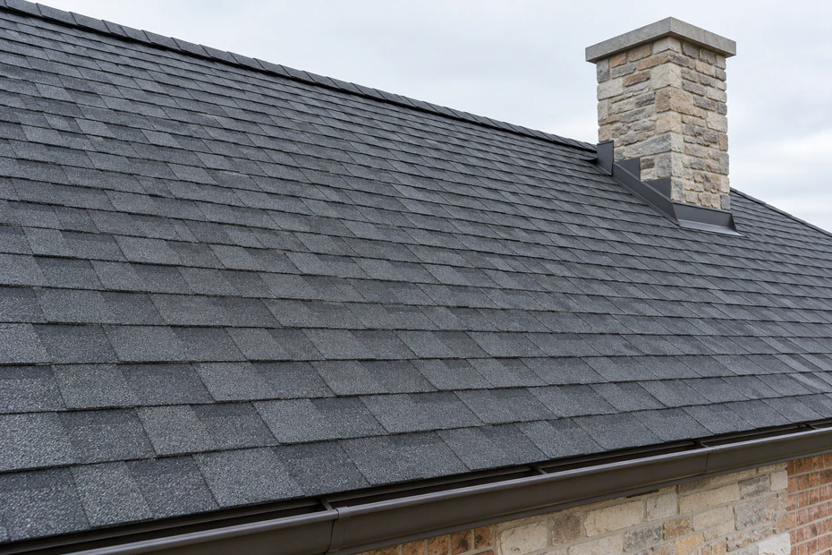
★★★★★
Hail got our roof on a Tuesday. By Friday they had documented everything and talked me through the claim.
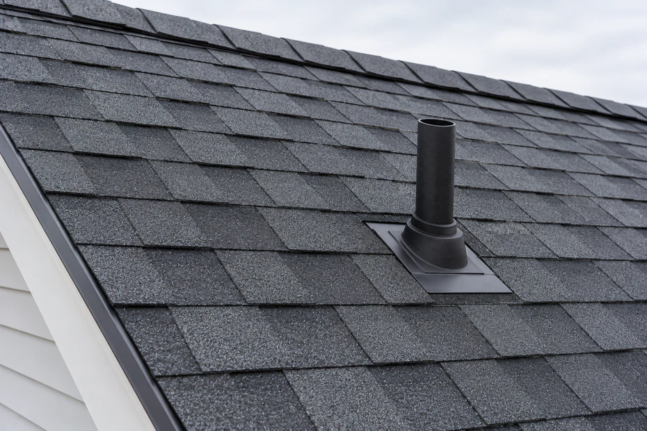
★★★★★
The price they wrote down is the price I paid. No surprises, and the crew left the yard cleaner than they found it.
★★★★★
Same crew from the first day to the last walkthrough. It felt like they actually cared about the house.
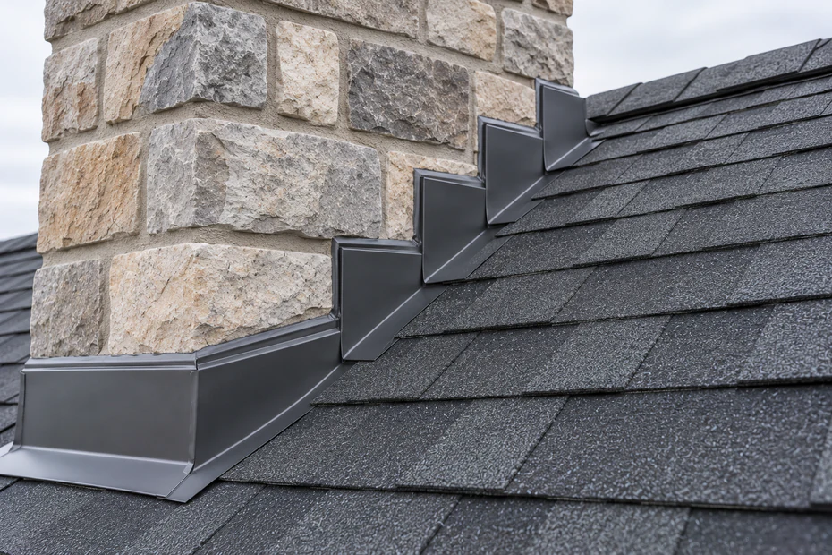
★★★★★
Found a leak two other roofers missed. Fixed in one visit.
{{reviews1}}
{{reviews2}}
{{reviews4}}
{{faq1}}
{{faq3}}
{{faq5}}
{{faq7}}
{{faq9}}